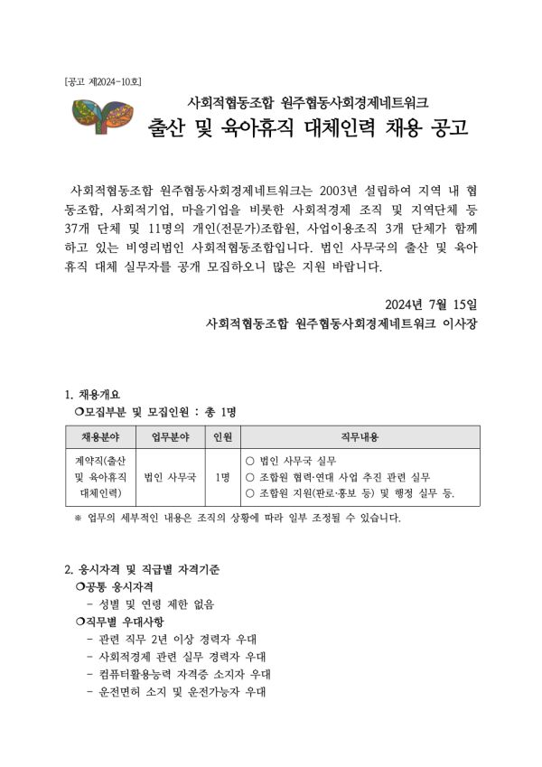
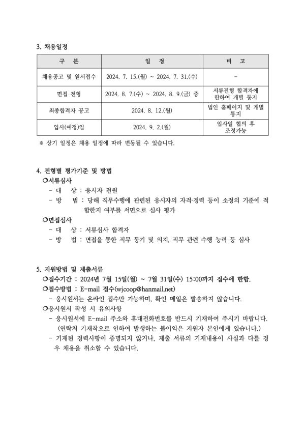
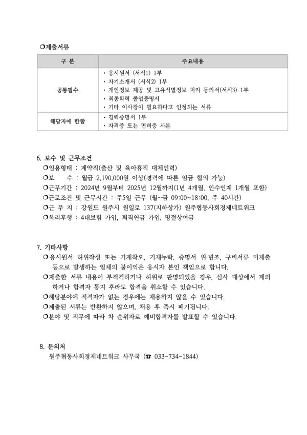

사회적협동조합 원주협동사회경제네트워크는 2003년 설립하여
지역 내 협동조합, 사회적기업, 마을기업을 비롯한 사회적경제 조직 및 지역단체 등
37개 단체 및 11명의 개인(전문가)조합원, 사업이용조직 3개 단체가 함께하고 있는 비영리법인 사회적협동조합입니다.
법인 사무국의 출산 및 육아휴직 대체 실무자를 공개 모집하오니 많은 지원 바랍니다.
2024년 7월 15일
사회적협동조합 원주협동사회경제네트워크 이사장
-
1. 채용 개요
- 채용분야 : 계약직(출산 및 육아휴직 대체인력)
- 업무분야 : 법인 사무국
- 인원 : 1명
- 직무내용 : 법인 사무국 실무, 조합원 협력・연대 사업 추진 관련 실무, 조합원 지원(판로, 홍보 등) 및 행정 실무 등
2. 응시자격 및 직무별 우대사항
- 공통 응시자격 : 성별 및 연령 제한 없음
- 직무별 우대사항
1) 관련 직무 2년 이상 경력자 우대
2) 사회적경제 관련 실무 경력자 우대
3) 컴퓨터 활용능력 자격증 소지자 우대
4) 운전면허 소지 및 운전가능자 우대
3. 지원방법 및
- 접수기간 : 2024년 7월 15일(월) ~ 7월 31일(수) 15:00까지 접수에 한함.
- 접수방법 : E-mail 접수(wjcoop@hanmail.net)
- 응시원서는 온라인 접수만 가능하며, 확인 메일은 발송하지 않습니다.
4. 보수 및 근무조건
- 임용형태 : 계약직(출산 및 육아휴직 대체인력)
- 보수 : 월급 2,190,000원 이상(경력에 따른 임금 협의 가능)
- 근무기간 : 2024년 9월부터 2025년 12월까지(1년 4개월, 인수인계 1개월 포함)
- 근로조건 및 근무시간 : 주5일 근무 (월~금 09:00~18:00, 주 40시간)
- 근 무 지 : 강원도 원주시 원일로 137(지하상가) 원주협동사회경제네트워크
- 복리후생 : 4대보험 가입, 퇴직연금 가입, 명절상여금
자세한 내용은 첨부파일을 참조해주세요.